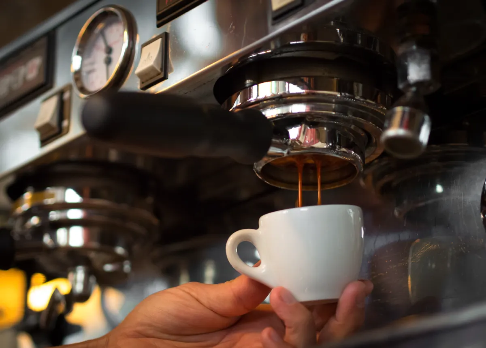

Café de spécialité à Maârif, Casablanca
Espresso, filtre et pâtisseries faites maison. Ouvert de 7h à 20h.
La carte du café
Les pâtisseries sortent de notre cuisine chaque matin, avant l'ouverture.
Cafés
- Espresso16 dh
- Cappuccino24 dh
- Filtre V6032 dh
- Latte glacé29 dh
Pâtisseries maison
- Croissant au beurre12 dh
- Pain au chocolat14 dh
- Cornes de gazelle, 327 dh
- Tarte au citron34 dh
